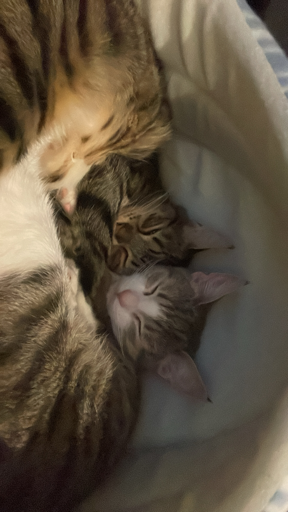
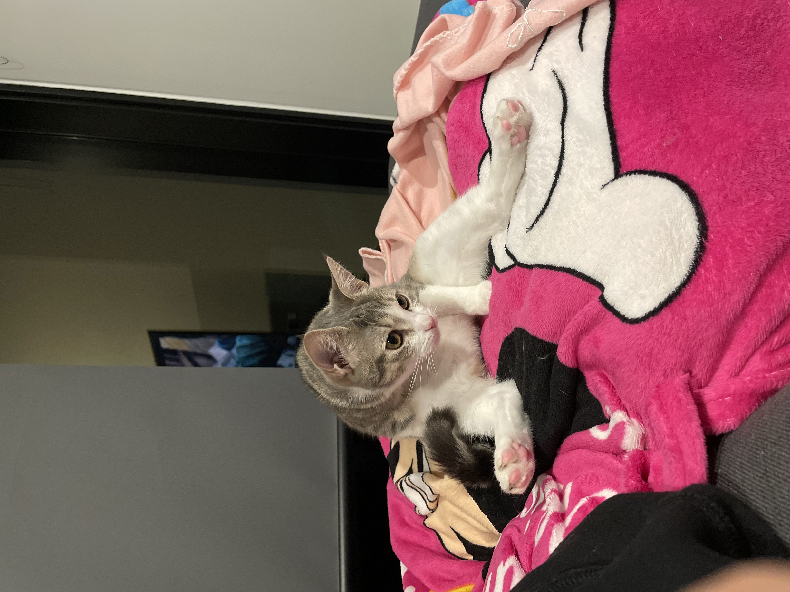
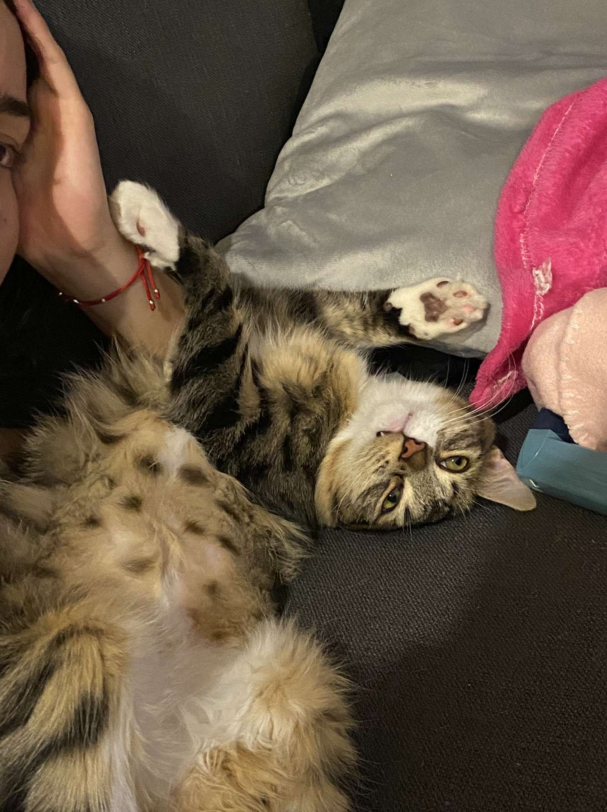

I come from a diverse family, my mum being from the Philippines
and my dad from Germany, however I can only speak English.
I graduated highschool in 2021 at Keysborough College and hope to graduate
from University with a Bachelor of Information Technology before the year 2026;
Then hopefully complete further studies and do a graduates program.
RMIT is the second Uni i have attended as I use to be enrolled at Monash
and did my first semester there for Bachelor of IT and Business.
Fun Facts About me



I own 2 cats named Tika and Lila!
Theyre are so incredibly annoying and clingy.
They have also destroyed my couch
I also enjoy playing sports but tend to not have time to anymore
because of work and uni. Although when I do play, I like to play
volleyball and soccer.
If I could eat one food for the rest of my life it’ll probably be potato
bake or spaghetti; or just anything with cheese because I love cheese.